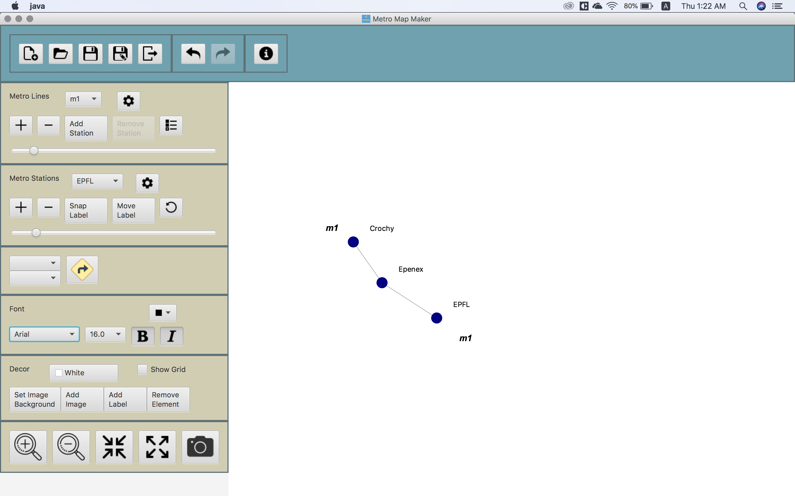
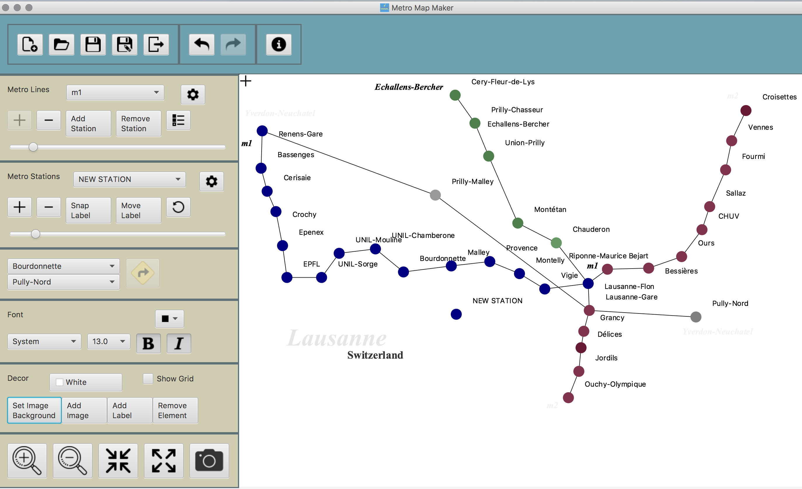
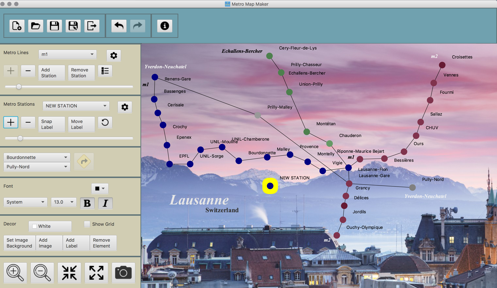
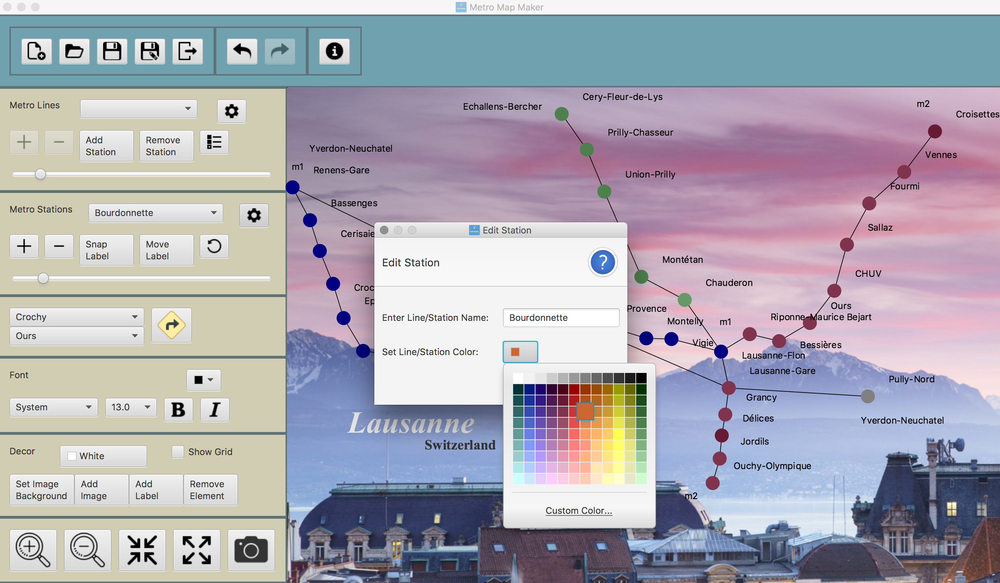
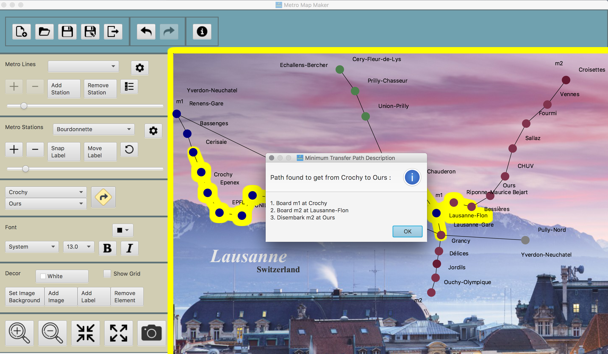

Metro Map Maker
Functionality Highlights
- Save, Export Work
- Undo, Redo system
- Add, Delete, Modify Map ELements
- Path finding
The application allows user to create graphical representations to create subway maps. The elements are: subway station, subway line, label, image. They can be edited and customized to adapt user's aesthetic needs. This project was done for CSE219 (Software Engineering) with Java. Head to my github page to see source code.
1. Add elements

2. Keep at it

Of course, you can save your work and come back to it later when you have time. After you've planned out the stations and subway postions, just hit save. Editing is easy - click and drag the station or label you want to move. For subway line, click the (-) button on the Subway Line toolbar.
3. Make it pretty

Voila! You have yourself a map. Save the work and come back later for modifications or export into a .JPG image

4. Path Finding
To find the minimum transfer path from one station to another, simply choose the start station and your destination and click the big yellow "Find Route" button.

Role within the project
The project was done by me, according to the system specifications by Professor Richard McKenna